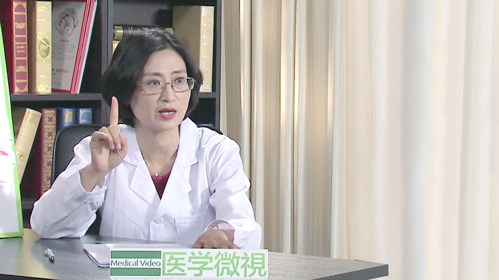

1.102 月经不调//王必勤教授¶
王必勤 主任医师¶

北京中医药大学东直门医院 主任医师 硕士生导师；
美国麻省医学院访问学者；郭志强老师全国传承工作室负责人；曾为中华妇科学术委员；曾为海南省妇科和上海市中医院妇科主任。
专业特长： 从事妇科临床、教学、科研工作30年，师承当代名医郭志强，吸全国名老中医妇科专家之长，充分发挥中西医结合的优势，对妇科疾病有自己独到的见解。擅长对不孕不育、月经病、卵巢功能减退、更年期综合征、盆腔炎、外阴白色病变、女人的保养等疾病的诊疗；现专攻不孕不育，多囊卵巢综合征等。
主要成就： 主编著作4部《养好卵巢女人不老》、《王必勤新妇科圣经》、《郭志强不孕不育实验录》《郭志强妇科精化》；副主编2部，参编著作6部，发表论文近20篇。
正常的月经是怎么样的？¶
一般来说，女性是每个月都要来一次月经，但每个人的月经相对时间是固定的，比如说有些人是25天，有些人是28天，当然也有个别的37天的，甚至有些人是40天才来一次月经，所以相对每一个人是有规律性的，我们叫做子宫出血，这就叫月经。
它有一定的规律性，它的规律在21到28天之间，如果是我们以28天为一个正常的月经周期，我们前后怎么算，加减7天，比如说28天减7天，21天，加7天35天，21-35天这个范围内，我们叫做正常的规律的月经，但平均时间来说是25到28天，最准确的是28天一个周期。
还一个就是行经多长时间，我们叫行经期，行经期一般来说，以前的规律是3-7天，一般来说最低不会低于3天，持续时间最长不超过7天，最常见的周期是多少天，是3-5天，行经期超过了8天，（叫做）行经期延长，短于3天叫做行经期过短。
还有一个叫月经的量，经常病人就问我，什么叫月经量多，月经量少？我来的月经量特别少，有些人说我来的月经量特别多，怎么去估计她这个量多或少？
正常的月经量，一般来说30到80毫升，就是说不要低于30毫升，低于30毫升，就叫月经量过少，如果是大于80毫升，我们就叫月经量过多，就是我们常说的什么叫多和少。
当然这个病人还说，我们要怎么去精确地估计呢？精确估计很简单，也可以我们做个实验，就是说每天用的卫生巾，用的卫生巾，前面的卫生巾先称称重，扔掉的时候再称一下重，这个是很精确的估计。
但是谁也不会检测到这么多，因为有时候好多女性是上洗手间的时候，把血流出来，流到卫生间里面去了，这个怎么估计，所以我们只能说估计。
但我经常告诉病人有个很好的估计方法，就是卫生巾，如果你们平时用的日用卫生巾，如果是你完全湿透一个日用的卫生巾，完全湿透，这个量大概在多少呢？大概在10到15毫升，所以经常病人来说，我月经量来的特别少，我说那你用卫生巾，你用多少张卫生巾，她说我就第一二天多，我第一二天用了四五张卫生巾纸，有些人是换的很勤，半个小时就上个卫生间，或者两个小时就上一次卫生间，就把这个卫生巾换掉了，这个不能这样算。
所以我经常告诉她，比如说你完全的湿透多少张，但是你完全能够湿透两张到三张以上，这个量就不叫少了，就是完全湿透，完全湿透30毫升，就是大于30毫升，
还有就是它的颜色，究竟月经是什么样的颜色？其实月经的颜色一般来说，稍稍带一点暗红色，太鲜红色也不是，颜色很淡也不是，就稍稍暗红色，有一点可能的小的血块，但是月经的血是不凝固，没有异味，可能带一点血腥味的可能会有少许的内膜脱落组织，这就是我们讲的一个正常的月经。
女人为什么会来月经？¶
因为女人有一套独有的生殖器官，比如说外生殖器，内生殖器有子宫、卵巢，什么叫月经？实际上就是她一个月只排一次卵，而排完卵以后，由于激素水平作用在子宫内膜上，内膜随着激素的变化，会周期性的脱落，所以它产生月经。
如果是说没有怀孕，这个周期没怀孕，我们的激素水平，子宫内膜发生变化，内膜长到一定的厚度，它就要脱落出来形成月经，所以这就是一个周期性的一个改变，随着激素水平的一个周期性改变，我们的月经实际上就是子宫的内膜的内膜层，叫做功能层周期性的剥脱，这就叫月经。
月经不调是怎么回事？¶
正常的月经它有一个正常的周期，正常的行经期，正常的量，伴随着月经周期可能还有些症状，比如说月经来以前乳房胀痛，下腹有点坠胀，尤其是女性在月经前期，会有一点情绪的波动、心情烦躁、易怒，这些情况都是一个月经周期伴随的症状，这不影响到她的生活，那么就叫正常的月经。
什么叫不正常的月经？那就是发生变化了，发生哪些变化呢？比如说她的月经周期发生变化，本来是28天一个周期的，她有可能37天一个周期的，就超了，超到10天以上或者两个月、三个月，甚至半年不来月经的，她的周期发生变化。
或者是她以前月经周期很规律，现在提前了，月经一个月来两次，甚至14天、15天就来一次，叫月经频发，月经提前，如果是月经往后推了，叫做月经推迟，如果推的时间更长，超过三个月以上叫闭经，这是月经周期的变化。
还有一个行经期的变化，比如说月经时间，本来7天的，如果出现了8天，9天，还不干净，甚至十天半个月，有些人月经来了一个月也不干净，一个月不干净中医叫做崩漏，西医叫做功血。还有一个就是行经期太短，2天，甚至有些人就来一天就干净了，叫做月经量少，行经期过短。
最常见还有月经量改变，月经量太多，一次周期超过80毫升以上就叫月经量多了，再多以后那肯定就是功血，中医又叫做崩漏，月经量少，低于30毫升，就叫月经量减少，这就是它的量的变化。
还有一些颜色的变化，质地的变化，一来月经比如说来的血块很多，或者是月经来的血里边有异味，实际它可能合并了感染，也叫变化。
还有一个就是说，我们叫月经什么不调，比如说伴随出现了一些什么症状，来了以后（肚子）疼得不得了，都影响工作，影响正常的生活，就叫做痛经了。
还有一些来月经的时候，乳房特别胀痛，甚至还有一些常见的来月经前后流鼻血，中医叫做鼻衄，中医讲的经行乳房胀痛，伴随这些情况出现，也属于月经不调的范围。
引起月经不调的原因有哪些？¶
现在月经不调的发病率是非常高的，所以大致上说，统计学的观点，至少有三分之二的女性体会过月经不调。
月经不调的原因就很多，比如说一个生活环境压力，工作压力太大，生活环境的改变，这些最常见的原因。
当然还有一些月经不调属于先天的原因，就是我们说的功能性的。
当然还有一些饮食方面的，比如说拼命的节食，这也会引起月经不调，还有暴饮暴食也会引起月经不调，生活环境，环境的污染，这都有可能。
还有些因素就是遗传，家族性的，先天性的因素，先天的卵巢功能不好，这些也是原因。先天的疾病，还有一些长肿瘤了，或者有炎症，这些都是原因。
哪些人容易出现月经不调？¶
首先当然是太胖、太瘦的人，从体形来讲太胖的人，中医叫做痰湿阻滞经脉，痰湿阻滞经脉以后，它不能化生经血，我们经常说肥胖的人，大概有接近至少三分之一到三分之二的人出现月经不调。还有一个就是太瘦，我最怕就是那种刻意减肥。
我前几天看病就见到一个，她1米70的身材，她本来体重是112斤，1米70，112斤，本来就属于正常体重范围的，我们假设我们最简单的算法，她1米75的话，她的标准体重在65公斤，我们再加减五公斤，比如说她加减那就是60公斤，我们正常的生理的话是60公斤，我们再把模特体重再减一减，她112斤已经属于最轻体重了，结果她把自己减成90斤，后边就经常月经不来了，甚至出现闭经，三年不来月经。
来找我看病的时候，那个皮肤皮下脂肪都没有，非常瘦，我说你美吗？不美，关键更重要的是她不来月经了，她慢慢减肥，减到这个分量的时候，她说我刚开始减的时候，还没有说月经不来，我现在完全一两年不来了，我说那很简单的道理，你刚开始减的时候，还有一定物质基础在里面，减到后面以后，中医讲的气血不足了，从西医来讲的话我们也要营养，我们下丘脑、垂体都需要营养，严重的营养不良会造成月经不调
还有一些经常熬夜的，生活没有规律的人，比如说她经常工作压力很大，通宵达旦地熬夜，当然有些人是属于自己玩耍，通宵达旦地玩游戏。 还有些吸烟的，女性吸烟，肯定会影响卵巢功能的，经常有些病人在我面前一坐，我看她嘴唇发干，脸上晦暗，我就问她吸不吸烟，吸烟的病人卵巢功能早衰的也多，月经不调的也多。
当然还有一些酗酒的，但女性相对酗酒的比男性少一些，但是也有，这一类的人群，也会引起月经不调。
还有先天性的因素，母亲生她太晚，我们叫做禀赋不足，太早太晚生育都不好，太小了她自己的生理（功能）还没有发育完善，年纪太大了，她的子女的月经不调的情况也比较多见一些。
还有一些就是，妈妈在怀孕期间，吃了什么药物，也会引起小孩的月经不调。
月经不调有哪些类型？¶
正常的月经有一定的周期、行经期、有一定的量，还有一些伴随的症状，如果是这些发生了一些异常的改变，就叫做月经不调。
最常见的月经不调有哪些？比如说月经的周期过短，中医叫做月经先期，西医叫做月经频发，超过37天以上，叫做月经后期，也叫月经推迟，时间再长一点，三个月才来一次月经，甚至出现闭经，这是它的周期的变化。
还有中医叫做月经的先后不定期，什么叫先后不定期，病人经常说我月经一会儿提前，20天就来一次月经，一会儿月经推迟，40天才来一次月经，叫做月经先后不定期。
我们正常的月经，相对每一个人它是有一定的规律，有可能在你身上是25天一个周期，有可能在她身上是37天一个周期，这都是正常的，但相对每个人的个体来说，它是有一定的规律的，但是它如果是发生变化，比如说提前或者推迟，一会儿提前，一会儿推迟，叫先后不定期，这叫做我们中医的名词，我们中医还把这个月经先后不定期叫做什么呢？月经延期，就是先后不定期，这是它的周期的变化。
还有月经量的变化，月经量过多是最常见的，这个月来的量特别多，超过80毫升以上，甚至多到100毫升，甚至200毫升的，甚至400毫升都有，因为她出现贫血，（这是）月经量多。还有就是月经量少，哪些月经量少？我们说的低于30毫升，现在的西医界定就是20毫升，但我们以前最常用的还是30毫升，就是说它的量的变化。
还有怎么叫不正常？来月经的时候，我情绪反应特别大，我每次来月经就要发脾气、暴躁，月经前后不调，伴随着症状出现症状，我们中医叫做什么，就是肝郁气滞，你经前的心烦，我们叫月经前心烦。
我们说的有些人会有痛经，就是伴随月经周期出现，每次一来月经她都很恐怖，她疼得不得了，不能上班，不能工作，影响了她的生活质量，甚至要吃止痛药，那么我们叫做痛经。
还有一些情况就是说，月经前乳房胀痛，还有一些月经前后出现口舌生疮，我们中医叫做口糜，口腔溃疡，还有就是出现了鼻血，甚至牙龈出血这些情况，这些都属于月经不调的范围。
月经不调应该做哪些检查项目？¶
要做哪些检查？月经不调要做（的检查），针对这些病因，第一个我们最常见的要做什么检查？我们要做激素水平的检查，比如说查她的内分泌的激素，她的内分泌的水平。
还有常规的B超，一些常规妇科检查，比如说她有没有长肿瘤、肌瘤。
当然还有一些更常规的，就是她的生命体征，血压、脉搏、呼吸这些看一看。
但最主要的妇科常用的就是B超，还有激素水平的检查，还有妇科体检，这是常规的检查。
但更深一步的还可能做一些核磁共振，还有一些腹腔镜，(宫)腔镜的检查，还有就是碘油造影。
月经不调要与哪些疾病鉴别开？¶
出现月经不调了一定要和疾病鉴别。
月经不调实际这个范围是相当大的，比如月经量过多，它分为功能性的和器质性的，月经量过多要和子宫肌瘤，卵巢上面长没长肿瘤，还有子宫本身有没有畸形，有没有子宫内膜异位症，要和这些鉴别诊断。
还有如果是月经不规则的出血，我们叫做崩漏，或者说她有没有怀孕的可能，怀孕有没有引起流产，当然了还有一些有没有妇科的炎症。
但还有一些鉴别诊断，比如说处女膜破裂、外阴的损伤，这些都要做一些鉴别诊断。
阴道性出血，比如说宫颈的病变，宫颈有没有癌，比如说有个病人她说她月经过了以后又出血了，我问她你这个出血是什么状况，因为有些是排卵期出血，我再追问她，她实际上有过性生活以后开始出血，有可能是宫颈的疾病，比如说宫颈有炎症，宫颈上面有息肉，宫颈上面有癌变，她有可能就是这些疾病，还有一些出血当然长了子宫肌瘤。
还有最常见的子宫畸形，还有就是子宫腔内长息肉，这些都要进行诊断。
那痛经也属于月经不调，也要和很多疾病鉴别，比如说有没有宫外孕的可能，有没有卵巢囊肿，有没有黄体破裂出血，当然还有盆腔炎症引起的，还有一些肠系膜下的肿瘤，肾的结石，膀胱结石，这些都要鉴别开。
月经不调对身体有哪些危害？¶
月经不调会对女性有损害的，第一个内分泌失调，比如从外表来说，容易太胖或者太瘦，她的体态都不均匀了，脸上容易长痤疮，这是从女人的美容的角度来说。
长期的月经不调，尤其是长期出现功血，内分泌失调时间长了有些甚至可能会出现，当然出血量太多，出现贫血这是很常见的。 出血量太多了以后，或者是说反反复复的功血没有处理，内膜长期增厚，有些甚至子宫内膜癌变，这些影响到她，好端端老是功血的病人，其实内膜癌的发生几率，比正常的月经人肯定高非常多的倍。
黄褐斑与月经不调有关吗？¶
女性月经不规律的人一看她脸上的痘多，痤疮很多，我们叫青春美丽痘，你再看她的皮肤很粗糙，她的皮肤的毛孔很粗，甚至还出现黑棘皮，脖子老有洗不干净的感觉，好像这里没洗干净，实际上不是，她就是一个多囊卵巢综合征，月经不调引起雄激素过高，所以出现了一些改变。
还一些多毛，胡子很长，甚至有一些人像男性一样，都长络腮胡的，当然了这属于多囊卵巢综合征，雄激素增高引起的月经不调。
还有一些黄褐斑，黄褐斑其实大部分跟月经有关的，由于雌激素水平缺乏，当然妊娠期的黄褐斑也是因为妊娠期的激素水平发生改变，分泌过多的雌性激素，也可以引起黄褐斑，叫做妊娠斑，正常的没有怀孕的女性，她内分泌失调，雌激素过少，或者过多都会引起一些黄褐斑。
当然中医来讲，黄褐斑大部分都是因为气血不足，气血失调，气血不足引起的营养不能上供面部。长期的劳累、休息不好、肝郁气滞、心情烦躁引起肝郁气滞，气滞血瘀引起黄褐斑。
还有刚才我第一个说的气血不足，营养不良，不能上到面部，引起黄褐斑，还有就是肝郁气滞血瘀引起黄褐斑，这是最常见，还有些肾虚、肾亏、肾气不足引起的一些黄褐斑也是非常常见的。
哪些月经不调必须引起重视？¶
好多人不了解她该不该看病，什么时候该来看病，多久来看。
当然一般来说，尤其是青春期的女性，刚初潮来月经，有些妈妈太着急了，就是初潮刚来月经，初潮13岁才来，她两个月不来，她就把女儿带来了，其实这种情况我觉得可以观察，尤其是一些正常的生理状况，比如说刚来月经的时候，初潮的时候，大概有两年的时间之内，她有个自然调整过程，因为她这个时候内分泌轴还没有发育完善，有可能这次来了，过了半年，甚至有过一年才来的，这属于正常现象。
有些病人她偶尔有一次月经没来，比如说在考试的时候太紧张了，学习压力太大了，只是推后了7天没来，来找我看，问我开不开药，我说你不用开，你再观察7天以后再看来不来，再不来再看病。
我们究竟月经多久不来才要来看病？比如说月经不调的病人本来以前月经周期28天，如果超过40天，或者说半个月以上不来，就应该来找医生看一看，或者说我这个月45天来了，连续几个月都是往后推，越来越推迟，我这个月45天来了，下个月可能你60天才来月经，这个情况也应该来看，不要等到说3个月到半年不来了才来。
因为有这种例子的，有些人40岁的时候，卵巢开始有点衰退了，结果她42岁想要小孩了，来找我看的时候，就一年不来月经了，完全闭经了，实际上她在两年前就开始有月经不调了，我就问她为什么两年前不找我们看，调理就错过了这个时期了。
当然还有一些功血的病人，还一些情况就是绝经后，她已经闭经了，闭经已经4年了，她又出现出血了，这个情况一定要找医生看，你不是正常月经，我们叫绝经后阴道出血，绝经后的阴道出血一定要小心，有些有可能是内膜的不好的病变，或者宫颈的病变。
还有一些情况就是说她在性生活的时候，跟男朋友或者跟丈夫同房了，同一次房出一次血，虽然出的量不多，但也是疾病的表现，这个疾病表现，可能还不是月经不调了，有可能是宫颈有病变了，比如说宫颈炎、宫颈有息肉，甚至不好的就是宫颈癌变了。当然还有一些就是宫腔内长息肉这些情况。
但还有些病人她来的月经，阴道的分泌物比较多，而这个分泌物，老是带一点血丝，其实这种情况是最要看的，长期的阴道里边带血丝。当然一些是由于月经不调引起的，还有一些可能就是宫颈长息肉，或者阴道有病变，甚至阴道也有癌变的。
还有一些就是她来月经了，正常来月经是3-7天，但是来月经前滴滴答答可能要出血，出多长时间呢？大概出3-7之内，正常来月经在3-7天，这个情况她们有些人就觉得，我月经还是规律的，经常病人说，我该来还是来，你再问她病情，她就说月经在7天前就开始少量阴道出血，这种情况也属于月经不调，往往属于黄体功能不足。
内分泌失调最常见还是器质性病变，比如宫腔长息肉、子宫有肌瘤、卵巢有肿瘤，这些情况是应该来看的。还有两次月经之间，她刚好月经一过没多久，在排卵期的时候出血，当然有些在西医来说，她肯定有些是不算疾病，但是实际上这个长期的排卵期出血，到后面月经越来越严重的不调，甚至出现功血，这个时候其实我觉得早期的时候，她也应该来看病。
就是说一个是她的时间，如果往后错了，或者往前提了，提得太多，都应该看。再就是她的量发生改变，还有她出血的时间发生改变，都要来看。
中医是怎么调理月经不调的？¶
我们中医就在一个治月经病，重在一个什么？调。所以我们重在调经，这个调怎么调？
就调她的阴阳，调她的气血，调她的脏腑功能，而脏腑功能比如说肝郁气滞、脾虚，或者肾气不足，这是最常见的，气血不调、气血阴阳失衡呢，比如气血不调，气血阴亏，气滞血瘀，或者是阴虚火旺，这些都是一个气血不调，根据她的症状，属于哪方面的表现。
比如说有些病人，但这个表现可能是个综合性的，比如说这个病人出现肝郁气滞，气滞还有血瘀，甚至还伴有肾亏，所以一个人是一个有机的整体，不可能只是一个肝郁就解释了，肝郁还往往伴有血郁，还有肝肾，肝郁同时伴有肝肾不足，还有就是气血不足的同时，伴有肾气亏虚，脾虚不足这些情况。
还有一些就是属于什么？比如说我有些很肥胖的病人一来，她可以有痰湿阻滞的同时，我们叫做痰湿之体，同时可能伴有肾气不足，其实好多体胖的人，你看他跑步跑不过你，她走一块路大汗淋漓，劳动劳不过你，她就是什么？她气虚，就是说痰湿之体的人，反而气虚更厉害一些，所以她就是说痰湿体质的人，伴有肾气亏虚，或者脾气亏虚这些情况，这就是根据她的体质，我们中医讲主调，调阴阳，调气血，调脏腑功能失调，这就是个重在调。
当然我们中医还讲什么？调冲任，刚才讲到我们说的调阴阳，调气血，调脏腑，我们中医还有一个妇科特点的调冲任，就是冲脉或任脉，冲任失调，我们女性的一个月经不调，中医来讲就叫做肾-天葵-胞宫这个轴，而肾-天葵-胞宫这个轴呢，那就是属于失调以后，又引起月经不调，所以我们调的同时，一个就是调脏腑，调气血，调阴阳，还有调冲任，调天葵。
月经不调主要是气血阴阳不足，气血阴阳失调，脏腑功能失调，还有我们这个肾-天葵-胞宫这个轴冲任不顾引起的，月经不调常见的证型有哪些呢？比如说气虚、血虚、阴虚、阳虚、气血不足、阴阳不足、阴阳气血失调，还有肾阳虚，肾阴虚，肾气虚，还有肝郁气滞血瘀，痰湿阻滞，相对这些最常见的症型，我打几个比方，气血不足、气血亏虚我们常用的是什么？主要是补养气血。
还有气滞血瘀，比如说最简单的方，桃红四物汤，血府逐瘀汤，少腹逐瘀汤，这都是可以的，当然它就是在桃红四物汤的基础上加减的。 还有血寒，血寒温经汤，温经汤其实有两个温经汤，它有一个补肾的温经汤，当然我这里血寒，一般来说偏虚寒的多，还有血热的，血热也会引起月经不调，而血热引起月经不调，比如说月经量过多，中医用的是千金散。
还有一个血瘀、气血不足，气滞血瘀引起的，我们刚才说的最常见的是桃红四物汤，桃红四物汤会化拆很多方，有血府逐瘀，少腹逐瘀这些相类似的方。 还有一个就是什么？肝肾不足，肝肾阴亏，肝肾阴亏用的是什么，比如说我们肝肾气亏，肝肾气虚的用肾气丸，肝肾阴亏的话用左归丸，尤其是肾阳虚的用右归丸，还有一些就是肝郁气滞的，就是说的逍遥散。
还有一个就是痰湿，其实痰湿阻滞也非常常见的，痰湿阻滞，最简单的方是二陈汤，二陈汤可以化拆为很多方，比如苍附导痰汤，启宫丸这些类似的方。
当然临床上实际上远远超过这些证型的，人是个有机的整体，有可能这个症是合并出现的。
月经不调在饮食上应该注意什么？¶
月经不调的病人，要根据每个人的体质去调，比如她饮食方面，气血不足的我经常跟人家开的一个方，叫当归补血汤。
当归补血汤很简单，就是黄芪、当归，它两个比例是黄芪是五份，当归是一份，比如说煲汤可以用黄芪、当归煲乌鸡汤，那是最好的方了，它还可以调理气血，这个汤煲了以后又好吃，又养身体，还增强免疫功能。
哪些东西不要吃？经常病人问我哪些食品不能吃，实际现在营养都是很丰富的，我经常说太辛辣的不要吃，太燥太辣的，还有太寒凉的不要吃。比如说刚刚从冰箱里拿出来的水果、冰淇淋，这些少吃一点，对你身体是有（害的），尤其是来月经的时候，更不能吃这些寒凉的东西。
平时有些脸上长痘的人，更不能吃太辛辣，太上火的，经常病人来调理的时候，她就说脸上这几天又长痘了，我说怎么这个痘又增加了，我那天吃火锅吃得太多了，脸上一下冒痘出来了，就是太辛辣了，太刺激了，少吃一点，这是非常重要的。
当然一些饮料我赞成喝天然的鲜榨的饮料，但不要放冰块，放了很多添加剂的，有些添加剂为了口感好，放了很多防腐剂，还有保鲜的，还有一些增加口感的，其实这些对于身体都是不好的，尤其对我们卵巢功能都是非常不好的。
当然也不要吃得太咸，其实饮食方面就是要注意这些。
月经不调会影响生育吗？¶
月经不调肯定会影响生育。
你想她月经不调，你不来月经了，甚至不排卵了、闭经了、卵巢功能早衰了，它能不影响生育吗，甚至她根本都不排卵了，那肯定怀孕成困难，她不排卵了你怎么去生育，那就是典型的一个不排卵性不孕症。
还有一些就是说月经不调，比如说我们刚才说的是不孕，还一个不育，月经不调她可能黄体功能不足，就是说我们说的黄体功能不足，子宫内膜不好，黄体功能不足她肯定这个胎儿坐不住，有可能引起流产，我们叫做不育，就是她每次能怀孕，但是一怀孕就出现流产，我们叫做不育症，肯定会引起的。
月经不调好多人在我这儿调月经的时候，是看不孕症，她是因为月经不调来看不孕症，到了后面我还是告诉她，你怀上孕以后你还得保胎，为什么？因为本身月经不调流产几率，比正常的人群至少要高三倍以上，所以基本上来说，月经不调的病人，在我这儿怀上孕了，我建议她还过来看看，找我调一调，保证胎儿发育正常，就是说在怀孕期间的激素水平也正常，能维持胎儿正常的妊娠，这是非常重要的。
吃避孕药会引起月经不调吗？¶
长期吃避孕药有些人会引起月经不调，但是这种月经不调，可能是一过性的，它不是永久性的，通过调理是可以改善的。
比如说她吃了一年多的避孕药，停药以后甚至不来月经了，甚至在吃避孕药的同时，她也出现月经不调了，这种情况，把她本来的周期打乱了，但她通过停药以后，再慢慢调理是可以改善的。
月经不调可以吃避孕药吗？¶
可以吃避孕药。
就是月经本身不调的人，甚至有痛经的病人，她可以通过吃避孕药来达到治疗，一个治疗了她的月经不调，一个达到避孕。有些人甚至是痛经的，我们也给她吃避孕药，避孕药拿来治疗痛经。
还有一些女性排卵期出血的，一些乳房胀痛的，都可以用这个避孕药来治疗的。
避孕药同时也是可以调月经的，为什么呢？因为避孕药本身就是激素，它含的激素不外乎就是孕激素和雌激素，或者单纯的孕激素，所以它也可以拿来治疗月经不调，比如说经常有些功血的病人，有些病人长期（月经）不调的人，也给她吃这个药（避孕药），我们都是拿来治疗月经不调，功血的。
如何预防出现月经不调？¶
月经不调怎么去预防，这是非常重要的。
其实保持一个良好的心态，心情最重要，我心情要愉快，尤其是起居，就是中医讲的要起居有时，要早睡早起，就是生活要有规律，这是非常重要。
还有饮食方面，就是我们不要一些不良的嗜好，比如说吸烟、喝酒，还有有些人老爱吃什么呢，那些碳酸饮料，喝饮料，比如说老喝那些买的饮料，其实饮料里面很多防腐剂是不好的。
还有我经常说的，其实保持一个最好的心态，怎么心情愉快，她说我工作忙的要命，劳累的要命。忙是可以忙，你得愉快的工作，笑也是工作，哭着也是工作，就像你走路一样的，爬过这座山，我笑着也要把这个山爬过去，哭也是爬，保持一个正常的，非常愉快的心态，热爱这个工作，很开心的去做，我觉得这是非常重要，劳累是一个方面，肯定会引起月经不调，但劳累的同时，你怎么去调整它。
还有一个，不要说我很烦这个工作，就是我很心情郁闷的去做，那就不一样了，我心情愉快的去劳累，和心情郁闷的去做这个工作，是两个概念的，所以我觉得心态很重要。
也要注意起居、注意休息、注意饮食、注意你的心态，保持一个正常的平和的心态，这是非常重要的，我经常说什么最重要，心情愉快最重要，你怎么去愉快的对每一件事，这是非常重要的。
当然了还要劳逸结合，运动方面有些人经常问我，我想做锻炼，做哪些锻炼，怎么去练。一般来说，我赞成她不要剧烈的过度的去消耗她的体力，不要刻意的去减肥，你本来不胖的，去拼命的减肥，剧烈的运动，结果她就造成月经不调，老不来月经，两三个月来一次，我说你应该适量，比如说你把剧烈运动改成一个小时，别太长了，因为你你本身偏瘦，你运动完了以后，饮食方面能量要跟上。
每个人身体状况是不一样的，所以过劳肯定不应该，但是对于个别的要减肥，就要她剧烈的运动了，比如说要减肥，要脱脂，要消耗能量，一般的人我赞成锻炼，但不要过。
当然了还有一些要注意自己的一些身体状况，比如说我排便有没有通畅，有些人大便长期很稀，有些人大便长期便秘，这要注意她的饮食了。大便太稀的人，一个食物上面要调理，还有当然要注意健脾，她主要是脾虚。还一些大便干燥的病人，这是最常见的，老是几天不大便，经常说我大便不稀，但是我三四天才大便，甚至一个礼拜才大便一次，说明她的排便也不畅，脸上容易长痘，起黄褐斑，排泄不好，这个情况要注意。
一个是饮食上面的调整，当然（用）药物的同时，更主要的是长期的饮食，生活习惯，还有一个定时大便，自己天天去坐便盆，养成一个排便的便意感，这是生活上面也要注意的。
在行经期的时候，就是正在月经期间要不要注意，以前老人说来月经不能洗澡，经常病人说我来月经了，头发都出汗了，时间久了不洗头的话，不是汗臭吗？我说是可以洗头，可以洗澡，那么怎么洗？就是说在月经期间，你只能淋浴，不能坐浴，更不能去游泳，也不能盆浴，洗完澡以后，尽快的把头发吹干，避免感冒。
还一个在月经期间，月经期间还要注意饮食结构，要有营养的，容易吸收的，清淡一点的，营养也要充分一些，比如说蛋白质含量高一点的，我们要排掉血，里边很多铁的流失，所以要补充一些含铁多一点的。不要吃太寒凉的，还有刺激性的辛辣的要少吃。
要注意一点月经期间，可不可以喝点红糖水，这些是可以的，如果你觉得胃凉胃寒，可以喝一点姜汤水也是可以的，在南方月经期，吃酒酿的鸡蛋，这个也是可以的，它有活血化瘀的作用。
还有在月经期间可以吃一点益母草煮鸡蛋，或者喝点益母草水，现在病人好多也知道了，在月经时候吃点益母草膏，吃一点益母草冲剂是可以的，但这个时间吃的时间不要长，如果你要吃益母草膏，我建议你月经前三天吃，不要整个月经周期都吃，吃几顿就行了，不要长期吃，这是非常重要的。
月经不调与心情有关吗？¶
心态是非常重要的。
因为中医讲肝主疏泄，肝藏血，肝主心情，所以心情和肝有关，肝疏泄调达了，我们的气血才通畅，才不会形成肝郁气滞，月经才正常。因为肝郁气滞，还会克脾土引起脾虚，我们叫做肝郁脾虚，引起月经不调，生化无源。
所以一定要注意自己好的心态，从中医的角度讲，女子以肝为先天，这是非常重要的，为什么要注重心情？主要是与肝有关，中医讲的与肝的疏泄有关。
当然如果从西医角度来说，跟心情也有关系的。
有一次，有个女的来找我看病，她就闹离婚，她其实才38岁，闹完离婚以后，月经就不来了，闭经了，来找我看病时FSH，叫促卵泡激素已经到了一百多，后来她在我们这里调，其实她就是典型的跟心情有关。
西医来说它是下丘脑、垂体、卵巢轴，心情就跟下丘脑有关，它会影响这个轴引起月经不调，其实这个病人后边是怎么样，后边我大概调了三个月以后才来月经，来完月经以后，基本上她的FSH降到七点几，非常好，月经到现在也一直正常。
看来就说明一个问题，心情跟月经不调是有关系的，所以以前我就讲，一夜愁白头，而这个愁白头，这个愁就跟心情有关，真是一夜头发就一下白了，觉得肯定不可思议，所以它就跟心情有关，而这个心情肯定跟月经都是有关。
我就说一夜愁了不来月经，月经不调，闭经，这个也是非常多见的，比如说有些高考的情绪压力，也是心情。还有夫妻之间，或者工作压力太大，尤其是为什么卵巢早衰，现在白领阶层更多呢，因为工作压力大，心情不好，这就都是一个心情。